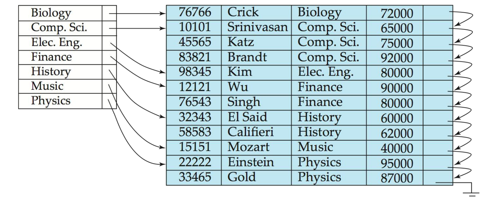

索引（Indexing）
约 4335 个字 3 行代码 10 张图片 预计阅读时间 29 分钟
引言
索引是数据库系统中提高数据访问效率的关键结构。本章介绍多种索引技术，包括传统的有序索引、B+树、哈希索引以及空间与时间索引等。理解这些索引结构及其适用场景，对于优化数据库性能和设计高效查询策略至关重要。
基本概念
-
索引基础
索引是用于加速对所需数据访问的机制：
- 类似于图书馆中的作者目录
- 搜索键（Search Key）是用于查找记录的属性或属性集
- 索引文件由索引项（指向实际记录的指针）组成
- 索引文件通常比原始数据文件小得多
- 索引按实现方式主要分为有序索引和哈希索引两类
索引评价标准
评价索引性能的关键因素包括：
-
支持的访问类型：
- 查找具有特定属性值的记录
- 查找属性值在特定范围内的记录
-
性能指标：
- 访问时间
- 插入时间
- 删除时间
- 空间开销
有序索引
-
有序索引概念
在有序索引中，索引项按搜索键值排序存储，类似于图书馆的作者目录：
-
主索引（Primary Index）：在顺序文件中，索引的搜索键决定了文件的顺序
- 也称为聚集索引（Clustering Index）
- 主索引的搜索键通常是但不一定是主键
-
辅助索引（Secondary Index）：索引的搜索键与文件的顺序不同
- 也称为非聚集索引（Non-clustering Index）
-
索引顺序文件：带有主索引的有序顺序文件
-
密集索引与稀疏索引
索引根据其包含的条目密度可分为两类：
密集索引（Dense Index）
定义
密集索引为文件中的每个搜索键值都创建一个索引记录，无论文件是否顺序排列。
例如：instructor关系上基于ID属性的索引
索引文件： 数据文件：
10101 → ------┐ ┌→ 10101, Srinivasan, Comp. Sci., 65000
12121 → ------|---------|→ 12121, Wu, Finance, 90000
15151 → ------|---------|→ 15151, Mozart, Music, 40000
22222 → ------|---------|→ 22222, Einstein, Physics, 95000
32343 → ------|---------|→ 32343, El Said, History, 60000
33456 → ------┘ └→ 33456, Gold, Physics, 87000
稀疏索引（Sparse Index）
定义
稀疏索引只包含部分搜索键值的索引记录，适用于记录按搜索键顺序排列的情况。
- 要定位具有搜索键值K的记录：
- 找到索引中最大的搜索键值 < K的记录
- 从该索引记录指向的位置开始顺序搜索文件
与密集索引相比：
- 空间和维护开销更小
- 定位记录通常更慢
- 一个好的折衷方案：为文件中的每个块创建一个索引条目，对应该块中最小的搜索键值

- 为每个搜索键值都有一个索引项
- 访问速度快但空间占用大
- 适合任何文件组织方式

- 只为部分搜索键值创建索引项
- 节省空间但访问速度较慢
- 仅适用于有序文件
辅助索引
-
辅助索引特性
辅助索引用于加速非主键属性上的查询：
- 数据文件不按该搜索键排序
- 必须是密集索引
- 索引记录指向包含所有具有该特定搜索键值的记录指针的桶
- 例如：查找特定部门的所有教师，或特定薪资范围的所有教师
辅助索引示例（基于instructor关系的salary字段）：
索引文件： 桶： 数据文件：
40000 → ------┐ ┌→ {指向Mozart的指针} Mozart, Music, 40000
60000 → ------|---------|→ {指向El Said的指针} Srinivasan, Comp. Sci., 65000
65000 → ------|---------|→ {指向Srinivasan的指针} Wu, Finance, 90000
87000 → ------|---------|→ {指向Gold的指针} Einstein, Physics, 95000
90000 → ------|---------|→ {指向Wu的指针} El Said, History, 60000
95000 → ------┘ └→ {指向Einstein的指针} Gold, Physics, 87000
索引的优缺点
索引提供了显著的查询性能优势，但也有一些权衡：
优点
- 显著提高记录搜索效率
- 使用主索引的顺序扫描非常高效
- 支持各种复杂查询条件
缺点
- 更新索引会对数据库修改操作造成额外开销（每次文件修改时必须更新其上的所有索引）
- 使用辅助索引的顺序扫描成本高昂
- 每次记录访问可能需要获取新的磁盘块
- 磁盘块获取需要约5-10毫秒，而内存访问只需约100纳秒
多级索引
当索引不适合内存时，访问会变得昂贵。解决方案是将索引视为一个顺序文件，并在其上构建一个稀疏索引：
- 外部索引：主索引上的稀疏索引
- 内部索引：主索引文件
如果外部索引仍然太大而无法装入主内存，可以创建另一级索引，依此类推。
注意
所有级别的索引在文件插入或删除时都必须更新。
索引更新
单级索引删除
- 密集索引：搜索键的删除类似于文件记录删除
- 稀疏索引：
- 如果索引中找不到搜索键，则不做任何操作
- 如果索引中存在搜索键条目，则用文件中下一个搜索键值（按搜索键顺序）替换该条目
- 如果下一个搜索键值已经有索引条目，则直接删除而不是替换
单级索引插入
- 使用要插入记录中出现的搜索键值执行查找
- 密集索引：如果搜索键值未出现在索引中，则插入它
- 稀疏索引：如果索引为文件的每个块存储一个条目，则除非创建了新块，否则不需要对索引进行任何更改
- 如果创建了新块，则将新块中出现的第一个搜索键值插入到索引中
多级索引插入和删除
多级索引的插入和删除算法是单级算法的简单扩展。
复合搜索键
-
复合搜索键索引
复合搜索键索引使用多个属性作为索引键：
- 例如：instructor关系上的(name, ID)属性
- 值按字典顺序排序
- 例如：(John, 12121) < (John, 13514) < (Peter, 11223)
- 可以仅针对name查询，或针对(name, ID)查询
- 提供更灵活的查询支持
B+树索引文件
-
B+树优势
B+树索引文件是索引顺序文件的一种替代方案：
-
索引顺序文件的缺点：
- 随着文件增长，性能会下降（由于创建了许多溢出块）
- 需要定期重组整个文件
-
B+树索引文件的优势：
- 面对插入和删除时，会自动重组
- 不需要重组整个文件以保持性能
- 仅有的轻微缺点是额外的插入和删除开销以及空间开销
对于B+树索引，数据文件不必是顺序的。
-
B+树结构
B+树是一种自平衡的树数据结构，具有以下属性：
- 所有从根到叶的路径长度相同
- 每个节点有n个指针位置和n-1个搜索键值位置
- 每个非根非叶节点（内部节点）有n/2到n个子节点
- 叶节点有(n-1)/2到n-1个搜索键值
- 特殊情况：
- 如果根不是叶，则至少有2个子节点
- 如果根是叶（即树中没有其他节点），它可以有0到n-1个值
典型的B+树结构如下：

节点结构
典型节点： - Ki是搜索键值 - Pi是指向子节点的指针（对于非叶节点）或指向记录或记录桶的指针（对于叶节点） - 节点中的搜索键按顺序排列：K1 < K2 < K3 < ... < Kn-1
叶节点特性
- 对于i = 1, 2, ..., n-1，指针Pi指向搜索键值为Ki的文件记录或记录桶
- Pn指向按搜索键顺序排列的下一个叶节点
- 如果Li, Lj是叶节点且i < j，则Li的搜索键值小于或等于Lj的搜索键值
非叶节点特性
非叶节点形成叶节点上的多级稀疏索引。对于具有n个指针的非叶节点：
- 对于1 ≤ i ≤ n-1，Pi指向的子树中的所有搜索键小于Ki，Pi+1指向的子树中的所有搜索键大于或等于Ki
B+树示例
- 叶节点必须有3到5个值（(n-1)/2到n-1，n = 6）
- 根以外的非叶节点必须有3到6个子节点（n/2到n，n = 6）
- 根必须至少有2个子节点

B+树特性
- 由于节点间连接是通过指针完成的，"逻辑"上相近的块不必"物理"上相近
- B+树的非叶级别形成稀疏索引的层次结构
- B+树包含相对较少的层级
- 如果文件中有K个搜索键值，树高不超过⌈logn/2(K)⌉
- 搜索可以高效进行
- 对主文件的插入和删除可以高效处理，因为索引可以在对数时间内重构
B+树操作
查找
查找搜索键值为V的记录的算法：
1. C = 根
2. 当C不是叶节点时 {
1. 找到最小的i使得V ≤ Ki
2. 如果找到 {
如果(V = Ki) 设置C = Pi+1
否则设置C = Pi
}
3. 否则设置C = C中最后一个非空指针
}
3. 找到最小的i使得Ki = V
4. 如果找到，沿着指针Pi找到所需记录
5. 否则，不存在搜索键值为V的记录
性能分析：
- 如果文件中有K个搜索键值，树高不超过⌈logn/2(K)⌉
- 节点通常与磁盘块大小相同（通常为4KB），n通常约为100（每个索引条目40字节）
- 对于100万个搜索键值和n = 100，查找最多访问⌈log50(1,000,000)⌉ = 4个节点
- 相比之下，具有100万个搜索键值的平衡二叉树需要访问约20个节点
插入
- 找到搜索键值应该出现的叶节点
- 如果搜索键值已在叶节点中存在
- 将记录添加到文件
- 如有必要，向桶添加指针
- 如果搜索键值不存在
- 将记录添加到主文件（如有必要，创建桶）
- 如果叶节点中有空间，在叶节点中插入(键值,指针)对
- 否则，按以下方式分裂节点（包括要插入的新(键值,指针)条目）： - 按排序顺序取n个(搜索键值,指针)对（包括要插入的对） - 将前n/2个放在原始节点中，将其余的放在新节点中 - 设新节点为p，最小键值为k，将(k,p)插入到被分裂节点的父节点中 - 如果父节点已满，则分裂它并向上传播分裂


B+树删除操作
B+树的删除操作比插入操作更复杂，涉及可能的节点合并和重分配：
删除算法
- 查找要删除的记录，将其从主文件和桶中删除（如果存在）
- 如果没有桶或桶变为空，则从叶节点中删除(搜索键值,指针)
- 如果由于删除而导致节点条目过少，且节点和兄弟节点的条目可以放入一个节点：
- 将两个节点中的所有搜索键值合并到一个节点（左侧节点）
- 删除另一个节点
- 从其父节点中删除指向被删除节点的指针对(Ki-1, Pi)
- 如果由于删除而导致节点条目过少，但节点和兄弟节点的条目不能放入一个节点：
- 在节点和兄弟节点之间重新分配指针，使两者都有超过最小数量的条目
- 更新父节点中的相应搜索键值
节点删除可能会向上级联，直到找到具有足够指针的节点。对于内部节点的合并，分隔两个节点的值（在父节点中）在合并时被拉下来。如果根节点在删除后只有一个指针，则删除它，唯一的子节点成为新的根。


B+树实现考虑因素
处理重复键值
有几种处理具有相同搜索键的多个记录的方法：
- 桶方法：使用一个桶存储具有相同键值的所有记录指针
- 元组指针列表：每个键值维护一个元组指针列表
- 需要额外代码处理长列表
- 如果搜索键上有许多重复值，删除元组可能很昂贵
- 空间开销低，查询无额外成本
- 通过添加记录标识符使搜索键唯一：
- 键存储的额外开销
- 插入/删除代码更简单
- 被广泛使用
B+树文件组织
B+树不仅可以用作索引结构，还可以直接用于文件组织：
- B+树文件组织中的叶节点存储记录而不是指针
- 叶节点仍需保持半满
- 由于记录比指针大，叶节点中可存储的记录数量少于非叶节点中的指针数
- 插入和删除的处理方式与B+树索引中的条目插入和删除相同
为提高空间利用率，在分裂和合并过程中可以涉及更多的兄弟节点：
- 在重分配中涉及2个兄弟节点（避免可能的分裂/合并）可以使每个节点至少有2n/3个条目
变长字符串作为键
当B+树索引使用变长字符串作为键值时：
- 节点中的分支因子变为可变
- 使用空间利用率作为分裂条件，而不是指针数量
- 前缀压缩技术可以减少键值存储空间：
- 内部节点的键值可以是完整键的前缀，只需包含足够的字符以区分子树中的条目
- 叶节点中的键可以通过共享公共前缀进行压缩
批量加载与自下而上构建
一次一个地将条目插入B+树需要每个条目约1次I/O操作，这对于大量条目的批量加载可能效率很低。更高效的替代方案包括：
-
先排序，后插入：
- 首先对条目进行排序
- 按排序顺序插入
- I/O性能大幅提升，但大多数叶节点只有半满
-
自下而上构建B+树：
- 先对条目排序
- 然后自下而上逐层创建树，从叶级开始
- 大多数数据库系统的批量加载实用程序实现了这种方法
B树索引文件
B树是B+树的变体，具有以下主要区别：
- B树只允许搜索键值出现一次，避免了搜索键的冗余存储
- 搜索键值在非叶节点中出现，在B树的其他地方不再出现
- 非叶节点中的每个搜索键必须包含一个额外的指针字段


B树与B+树的比较
B树索引的优点：
- 可能比相应的B+树使用更少的树节点
- 有时可以在到达叶节点之前找到搜索键值
B树索引的缺点：
- 只有少部分搜索键值能够提前找到
- 非叶节点更大，分支因子减小，因此B树通常比相应的B+树深度更大
- 插入和删除比B+树更复杂
- 实现比B+树更难
通常，B树的优势不足以抵消其劣势。
哈希索引
-
哈希索引基础
哈希索引使用哈希函数将搜索键映射到存储桶：
- 桶是包含一个或多个记录的存储单元（通常是磁盘块）
- 哈希函数h从所有搜索键值K集合映射到所有桶地址B集合
- 哈希函数用于定位记录以进行访问、插入和删除
- 不同搜索键值可能映射到同一个桶，因此需要顺序搜索整个桶以定位记录
哈希函数
好的哈希函数的特性：
- 最差的哈希函数将所有搜索键值映射到同一个桶，使访问时间与文件中的搜索键值数量成正比
- 理想的哈希函数是均匀的，即每个桶分配到相同数量的搜索键值
- 理想的哈希函数是随机的，无论文件中搜索键值的实际分布如何，每个桶都会分配到相同数量的记录
典型的哈希函数对搜索键的内部二进制表示进行计算：
- 例如，对于字符串搜索键，可以将字符串中所有字符的二进制表示加起来，并取模桶数
桶溢出处理
桶溢出可能发生的原因：
- 桶数量不足
- 搜索键值分布偏斜，可能由于：
- 多个记录具有相同的搜索键值
- 所选哈希函数产生非均匀的键值分布
虽然可以减少桶溢出的概率，但无法完全消除；通常使用溢出桶来处理：
- 溢出链接：将给定桶的溢出桶通过链表链接在一起
- 这种方案称为闭散列，而另一种称为开散列的方法（不使用溢出桶）不适合数据库应用
静态与动态哈希索引
在静态哈希中，函数h将搜索键值映射到固定的桶地址集B：
- 如果初始桶数太少且文件增长，性能会因过多溢出而下降
- 如果为预期增长分配空间，初始时会浪费大量空间
- 如果数据库收缩，同样会浪费空间
解决方案：
- 定期使用新的哈希函数重组文件（成本高，中断正常操作）
- 允许动态修改桶数量（更好的解决方案）
可扩展哈希
可扩展哈希是一种动态哈希形式：
- 哈希函数生成大范围的值（通常是32位整数）
- 在任何时候只使用哈希函数的前缀来索引桶地址表
- 前缀长度为i位（0 ≤ i ≤ 32），初始i = 0
- 随着数据库的增长和收缩，i的值增长和收缩
- 桶地址表中的多个条目可能指向同一个桶，实际桶数 < 2^i
可扩展哈希的工作原理：
- 每个桶j存储一个值ij，所有指向同一个桶的条目在前ij位上具有相同的值
- 查找包含搜索键Kj的桶：计算h(Kj) = X，使用X的前i位作为桶地址表的偏移量
- 插入记录：如果有空间，直接插入；否则需要分裂桶并重新尝试插入
桶分裂过程：
- 如果i > ij（多个指针指向桶j）：
- 分配新桶z，设置ij = iz = (ij + 1)
- 更新桶地址表中原来指向j的条目的后半部分，使其指向z
- 从桶j中移除每条记录并重新插入（到j或z）
- 为Kj重新计算新桶并将记录插入该桶
- 如果i = ij（只有一个指针指向桶j）：
- 如果i达到某个限制或发生太多分裂，创建溢出桶
- 否则，增加i并将桶地址表大小加倍，然后重新计算
可扩展哈希的优缺点：
- 优点：
- 随着文件增长，哈希性能不会下降
- 空间开销最小
- 缺点：
- 查找所需记录需要额外的间接寻址
- 桶地址表可能变得非常大（大于内存）
- 更改桶地址表大小是昂贵的操作
索引选择
选择索引类型时需要考虑多种因素：
索引选择考虑因素
- 定期重组的成本
- 插入和删除的相对频率
- 是否希望以牺牲最坏情况访问时间为代价来优化平均访问时间
- 预期的查询类型：
- 哈希通常更适合检索具有指定键值的记录
- 如果范围查询常见，则有序索引更可取
实际使用情况
在实践中：
- PostgreSQL支持哈希索引，但由于性能原因不鼓励使用
- Oracle支持静态哈希组织，但不支持哈希索引
- SQLServer仅支持B+树
复合索引与单属性索引
对于某些类型的查询，可以使用多个索引：
使用单个属性索引处理查询的可能策略：
- 使用dept_name索引查找Finance部门的教师；测试salary = 80000
- 使用salary索引查找薪水为80000的教师；测试dept_name = 'Finance'
- 使用两个索引分别获取指针集，然后取交集
复合搜索键索引
复合搜索键包含多个属性，例如(dept_name, salary)：
- 按字典顺序排序：(a1, a2) < (b1, b2)如果a1 < b1或(a1 = b1且a2 < b2)
- 对于查询条件
WHERE dept_name = 'Finance' AND salary = 80000，(dept_name, salary)上的索引可以用来只获取满足两个条件的记录 - 也可以有效处理
WHERE dept_name = 'Finance' AND salary < 80000 - 但不能高效处理
WHERE dept_name < 'Finance' AND salary = 80000
位图索引
-
位图索引概念
位图索引是一种特殊类型的索引，为多键高效查询而设计：
- 假设关系中的记录按顺序编号（从0开始）
- 适用于取值较少的属性（如性别、国家、州等）
- 位图是一个简单的位数组
- 基本形式中，属性的每个值都有一个位图
- 位图的大小与记录数相同，如果记录具有该属性值，则相应位为1，否则为0
位图操作
位图索引对多属性查询特别有用，不太适合单属性查询。查询通过位图操作回答：
- 交集（AND）
- 并集（OR）
- 取反（NOT）
每个操作取两个相同大小的位图，并对相应位应用操作以获得结果位图：
例如，查找收入级别为L1的男性：10010 AND 10100 = 10000
位图索引优势
- 与关系大小相比，位图索引通常非常小
- 例如，如果记录为100字节，单个位图的空间是关系所用空间的1/800
- 如果属性有8个不同值，位图只占关系大小的1%
- 位图打包成字，单个字AND（基本CPU指令）一次可计算32或64位的AND
- 计算1的数量可以通过技巧快速完成
- 对于匹配记录数量大的值，位图可以代替B+树叶级别的元组ID列表
空间和时间索引
-
空间时间索引应用
数据库可以存储空间和时间数据类型，如线条、多边形和栅格图像：
- 允许关系数据库存储和检索空间信息
- 查询可以使用空间条件（如包含或重叠）
- 查询可以混合空间和非空间条件
- 最近邻查询找到满足给定条件的最近对象
- 范围查询处理空间区域
- 支持计算区域的交集或并集
- 空间连接使用位置作为连接属性
空间索引结构
k-d树
k-d树是用于多维索引的早期结构：
- 每级将空间划分为两部分
- 在树的根级别选择一个维度进行分区
- 在下一级节点选择另一个维度，循环使用各个维度
- 存储在子树中的约一半点落在一侧，一半在另一侧
- 当节点包含的点少于给定数量时停止分区
k-d-B树扩展了k-d树，允许每个内部节点有多个子节点，适合二级存储。
四叉树
四叉树的每个节点与空间的矩形区域相关联，顶部节点与整个目标空间相关联：
- 每个非叶节点将其区域分为四个大小相等的象限
- 每个这样的节点有四个子节点，对应于四个象限
- 叶节点包含0到固定最大数量的点（示例中设为1）
R树
R树是B+树的N维扩展，用于索引矩形和多边形集合：
- 许多现代数据库系统支持R树及其变体（如R+树和R*树）
- 基本思想：将与每个B+树节点关联的一维区间概念推广到N维区间（即N维矩形）
- 节点的包围盒是包含与该节点关联的所有矩形/多边形的最小矩形
- 子节点的包围盒允许重叠
查找算法：
- 从根节点开始，如果是叶节点，输出与查询点/区域相交的数据项
- 否则，对于当前节点的每个其包围盒与查询点/区域相交的子节点，递归搜索该子节点
- 最坏情况可能效率很低，但在实践中表现可接受
时间索引
时间数据是具有关联时间段（区间）的数据：
- 时间间隔有开始和结束时间
- 如果元组当前有效且其有效期结束时间未知，结束时间设置为无限
- 查询可能要求查找在某个时间点或时间区间内有效的所有元组
创建时间索引的方法：
- 在属性a上使用空间索引（如R树），将a作为一个维度，时间作为另一个维度
- 将有效时间在时间维度上形成一个区间
- 当前元组（结束时间为无限）会导致问题，因为值是无限的或非常大
- 解决方案：将所有当前元组（结束时间为无限）存储在单独的索引中，按(a, 开始时间)索引
总结
索引是优化数据库性能的关键工具，为特定应用选择合适的索引类型至关重要：
-
有序索引（如B+树）适合：
- 范围查询
- 按序访问
- 支持各种复杂查询条件
-
哈希索引适合：
- 精确匹配查询
- 高插入率的应用（特别是动态哈希）
- 空间效率要求
-
位图索引适合：
- 低基数属性（取值较少）
- 复杂多属性查询
- 数据仓库应用
-
空间和时间索引适合：
- 地理信息系统
- 路径规划应用
- 时态数据库
索引选择应考虑查询模式、更新频率以及存储约束等因素，并在适当的时候使用复合索引以优化复杂查询。